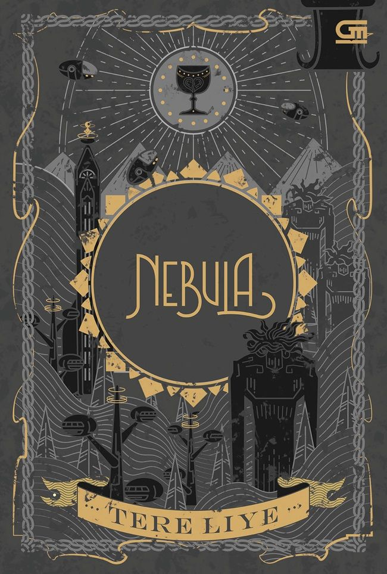

Herbwitch
Rp65.000
The Herbwitch Princess adalah kisah fantasi tentang seorang putri yang tidak dibesarkan untuk memegang mahkota, melainkan meramu tanaman obat dan membaca bisikan alam. Di kerajaan yang lebih menghargai pedang daripada pengetahuan, ia menyembunyikan kemampuannya sebagai herbwitch—penyihir herbal yang mampu menyembuhkan, melindungi, sekaligus merusak keseimbangan bila disalahgunakan. Ketika wabah misterius dan konflik politik mulai menghancurkan kerajaan, sang putri dipaksa keluar dari bayang-bayang. Ia harus memilih antara takdir sebagai pewaris tahta atau panggilan jiwanya sebagai penjaga alam.
.webp)
Laut bercerita
Rp155.000
Laut Bercerita adalah sebuah novel kuat tentang ingatan, sejarah, dan rasa kehilangan yang tak terucap. Ceritanya berkisar pada Sawali, seorang anak yang dibentuk oleh perjalanan hidup keluarga yang berakar pada peristiwa politik besar di Indonesia. Lewat tulisan yang puitis dan matang, Leila S. Chudori membawa pembaca menelusuri fragmen masa lalu yang sarat emosi, ikatan persaudaraan, dan pencarian jati diri di tengah pergulatan sosial. Buku ini bukan hanya mengisahkan masa lalu; ia juga mengajak pembaca merenungkan makna waktu, pengharapan, dan arti sebuah rumah.

Nebula
Rp105.000
Nebula adalah novel fantasi-petualangan yang melanjutkan perjalanan dunia paralel penuh misteri. Cerita berfokus pada Si Putih, kucing kesayangan Raib, yang ternyata menyimpan rahasia besar tentang kekuatan dan masa lalunya. Dalam buku ini, pembaca diajak menjelajahi dunia baru bernama Nebula, tempat penuh teknologi canggih, makhluk unik, dan konflik besar yang mengancam keseimbangan dunia paralel. Si Putih yang awalnya terlihat biasa, justru menjadi kunci penting dalam pertempuran melawan kekuatan jahat.. Dengan gaya khas Tere Liye yang imajinatif dan emosional, Nebula menyajikan: Petualangan menegangkan Misteri identitas Persahabatan dan pengorbanan Dunia paralel yang makin luas dan kompleks Novel ini cocok buat kamu yang suka cerita fantasi dengan alur cepat, plot twist, dan karakter yang berkembang kuat.